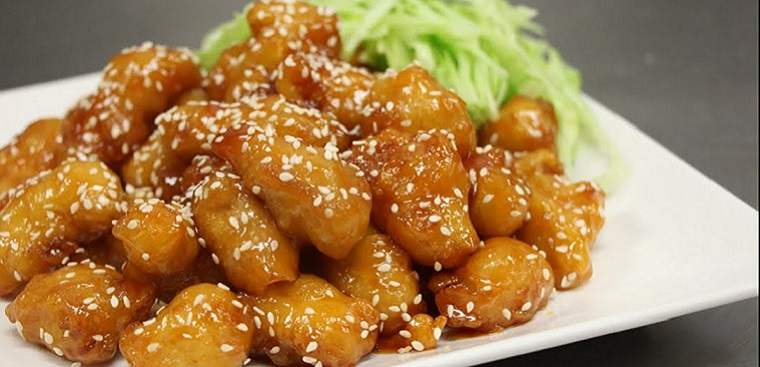

Go Back to homepage
Honey Glazed Chicken

Ingredients
- 150gr Chicken breast
- 1 egg
- 50gr flour
- 3 tps honey
- ketchup
- 1 bulb of garlic
Prepping
- boil a pot of salted water and rinse the chiken breast with it
- cut the chickem breast into bite size
- mince the garlic
- adding flour, egg, and 150 ml of water, mix gently and thoroughly
- season the chiken with salt and peppers then put into the previous mixture, stir gently till fully coated
Instructions
- In a sauce pan, adding oil and heat it up till hot
- adding chicken in smal batches till golden then take them out
- in another pan, adding 2tps of oil and heat the oil till hot, adding garlic, dice the garlic till golden then add the ketchep, honey, sailt and 50ml of water
- when the mixture is boiled, take off the heat, adding the golden chicken, stir can coat evenly